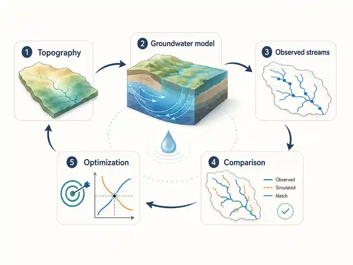
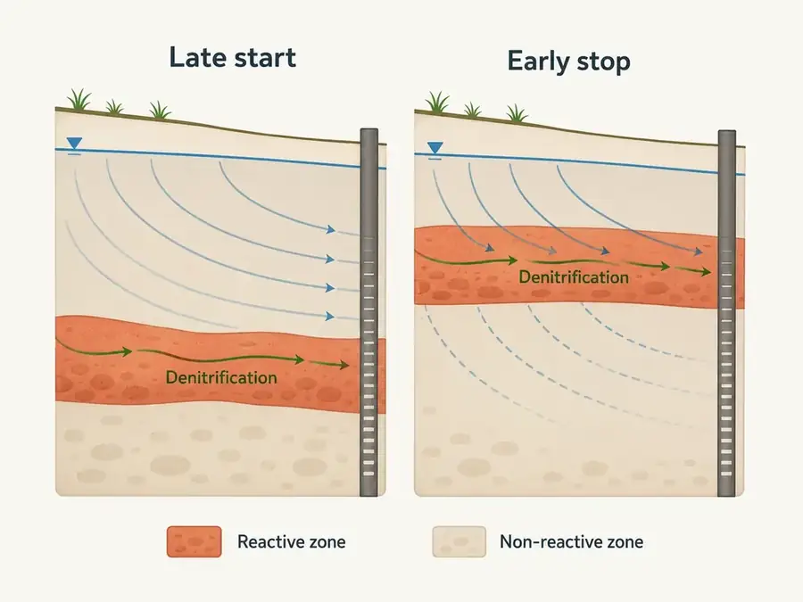
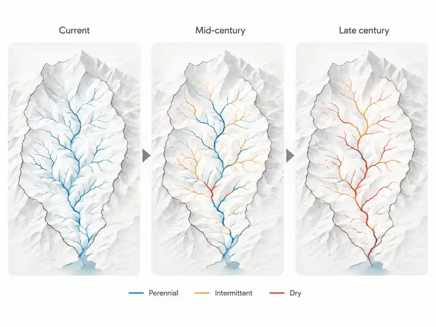

Research
My research examines groundwater flow and solute transport in the subsurface, with a particular focus on shallow aquifers and headwater catchments. I combine observations, environmental tracers and modelling to understand how these systems work and to develop robust, parsimonious approaches that can be applied beyond intensively monitored sites.
Shallow aquifers and headwater catchments
Shallow aquifers play a major role in sustaining streamflow and water availability, yet their hydraulic properties remain poorly constrained. We investigate how geology, geomorphology and groundwater–surface-water interactions shape subsurface flow.
We develop methods to estimate hydraulic properties from widely available data, including streamflow, stream-network extent and intermittency, geological information and groundwater-level observations. These approaches are being extended from hillslope to regional and European scales.

For further reading: what can streams tell us about the subsurface?
Transit times, water quality and reactivity
The time water spends in the subsurface strongly controls contaminant transport and fate. We combine environmental tracers, including CFCs and dissolved silica, with flow and transport models to characterise groundwater residence-time distributions.
Much of this work focuses on nitrate. We investigate where denitrification occurs in aquifers, how it depends on geological structure and transit times, and how far these properties can be extrapolated from one catchment to another.

For further reading: why is residence time not enough to predict contaminant fate?
Water resources in a changing environment
We use this process-based understanding to investigate how water resources respond to climate change and human pressures.
Applications include low flows and stream intermittency, future water availability, drinking-water supply systems and groundwater-driven flooding in coastal areas. Our aim is to connect process-based models with planning and water-management needs across regions and territories.

For further reading: how does climate change concretely transform water resources?
Modelling and numerical tools
Modelling provides the common methodological thread across this research. Following earlier work on flow and transport in fractured media, we now develop models that represent surface–subsurface interactions and can be deployed across many catchments.
This effort is embodied in HydroModPy, a Python toolbox for building, calibrating and comparing catchment-scale models of shallow aquifers.

For further reading: from catchment to Europe, which model for which question?
Fractured media, heterogeneity and upscaling
A substantial part of my earlier research focused on flow and transport in strongly heterogeneous porous and fractured media. The aim was to relate fracture geometry, connectivity and property distributions to hydraulic and transport behaviour at larger scales.
This work combined discrete-fracture modelling, high-performance computing, upscaling, reactive transport and fracture–matrix exchange. It led to robust numerical methods developed with Inria and applications to water resources, geological storage and fractured reservoirs. This is now mainly a past research activity, but it remains an important methodological foundation for my current work on shallow aquifers, modelling and multi-fidelity approaches.

For further reading: which fracture-network properties actually control flow and transport?
Selected scientific results presented through their questions, methods and contributions.